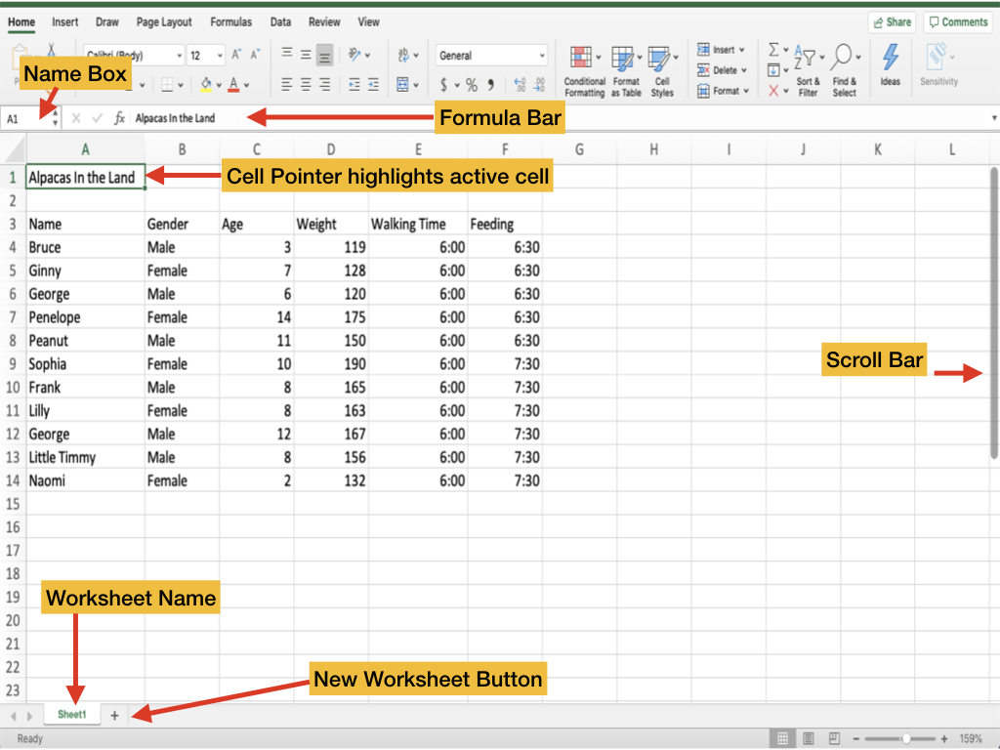

Lesson 2: Indentifying Excel Window Components
Objective: Students will be able to create and manipulate cell data within a worksheet.
Excel is very different than word. To begin, we need to become familar with the parts of the Excel window.
Take a look at the image below:
- The name box displays the actice cell address. The active cell is the one in which you or the user has selected. Practice clicking on Cell B2. Check to see if the name box now displays B2. Try again with cell H6, C9, and C10.
- The formula bar allows you to enter or edit the data within each cell.
- The intersection of every row and column is called a cell.
- Sheet tabs allow you to change between worksheets. Each worksheet tab can be renamed, reordered, or change the tab color.
- The scrolling bars allow you to move throughout the worksheet to see data that is not visible within the view.
Daily Assignments
- Practice using the cursor and editing data with the "Welcome to Excel File" located in our OneDrive Shared Folder->Excel Assignments
- Work on your Excel Vocabulary List from Lesson 1
- Quiz yourself on the parts of Excel here.
Instructions for Excel Vocabulary List
- Open Excel and create a new workbook and title it: excelVocabulary_firstLastname.xlsx
- Save it to your OneDrive
- In cell A1, type Microsoft Excel Vocbulary.
- In cell A2, type "Term"
- In cell B2, type "Definition"
- In order, type the following
Vocabulary Words in the cells A3-A18 - active cell
- active sheet
- autoformat
- cell
- cell reference
- column heading
- formula
- formula bar
- name box
- range 1
- row heading
- up-down bars
- workbook
- worksheet
- function (Excel)
- autosum
- Go to Microsoft (Links to an external site.)
- Find the definition of the word, and type it in cell to the right of the word. Your definitions should go into Cells B3-B18.
- Save your Excel workbook to DIT Working->Excel.